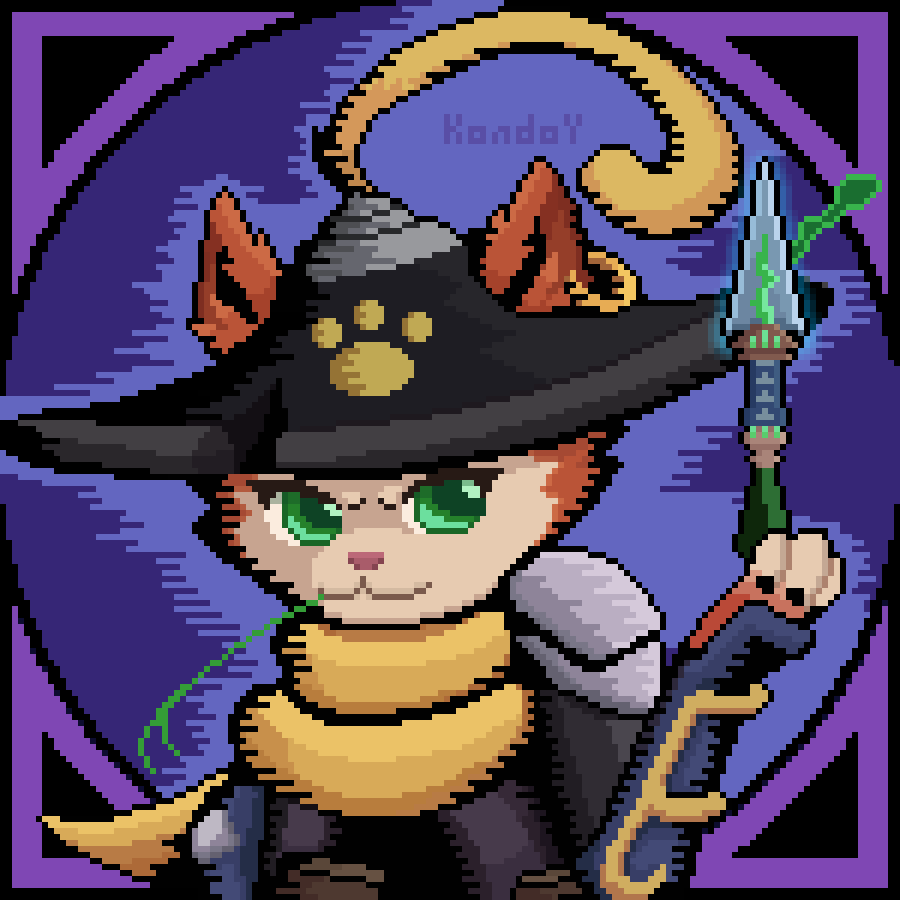

#GunfireReborn
#GunfireReborn

Tiempo restante para su salida: 186 días : 20 horas : 43 minutos


#GunfireReborn
Tiempo restante para su salida: 186 días : 20 horas : 43 minutos
En el mundo de Gunfire Reborn existen infinidad de monstruosidades que amenazan con el bienestar del mundo y sólo unos pocos elegidos por los dioses del Cronolimpo serán capaces de enfrentarlos. Con diferentes talentos, armas, elementos y experiencia podrán poner fin a esta era de destrucción.
La mayor virtud de estos aclamados héroes no son sus habilidades de combate, sino el poder de volver a la vida una vez que son derrotados por los terrores que acechan en el mundo. Gracias a esta habilidad vuelven de las cenizas y aprenden de sus muertes y experiencias en el combate para volver a intentarlo.
Elegí a tu personaje favorito y adentrate en este mundo sin fin !

Vida:
65 - 90
Escudo:
65 - 110

Ratio del escudo:
10% / s

Delay del escudo:
3s
Velocidad:
5.0
Primario:
Orbe de energía
Secundario:
Granada de humo

Un visitante misterioso del Reino de los Espíritus que domina la alquimia y las artes elementales. Con su experiencia en alquimia, el Príncipe Heredero es capaz de atrapar y congelar el movimiento de sus enemigos con su Orbe de Energía. Sus talentos ocultos y su trasfondo lo hacen aún más en sintonía con los elementos, lo que le permite combinarlos hábilmente para crear efectos extraordinarios
Vida:
100 - 155
Escudo:
30 - 55
Ratio del escudo:
10% / s
Delay del escudo:
4s
Velocidad:
5.2
Primario:
Empuñadura doble
Secundario:
Granada explosiva

Un maestro de las explosiones y las armas de fuego. La experiencia de Ao Bai con las armas de fuego le permite controlar dos armas al mismo tiempo. Además, debido a su pasión por las explosiones, siempre ha sido capaz de fabricar poderosos explosivos
Vida:
70 - 115
Escudo:
70 - 115
Ratio del escudo:
10% / s
Delay del escudo:
3s
Velocidad:
5.5
Primario:

Salto
Secundario:
Tajo

Qing Yan es una hábil artista marcial que se mueve como el viento y es tan escurridizo como las sombras. A diferencia de otros, no le gusta la alquimia y los escudos y, en cambio, se entrega al combate cuerpo a cuerpo y la armadura. Con su destreza en las artes marciales, Qing Yan salta a la refriega para dividir a los enemigos. Dicho esto, también disfruta del humo y los sonidos de una escopeta
Vida:
50 - 75
Escudo:
60 - 85
Ratio del escudo:
12% / s
Delay del escudo:
3.5s
Velocidad:
6.0
Primario:
Corriente fatal
Secundario:
Relámpago en cadena

Lei Luo, que nació con tatuajes de truenos, puede manipular fácilmente los rayos para golpear a los enemigos. A través del entrenamiento continuo, puede integrar sus talentos con las habilidades con las armas de fuego para hacer un tiro increíble
Vida:
50 - 75
Escudo:
80 - 105
Ratio del escudo:
8% / s
Delay del escudo:
3.5s
Velocidad:
5.2
Primario:
Espadas fuera
Secundario:
Florecimiento mortal

Tao, que es una maestra en el arte del control de la espada, manipula su espada voladora real para atacar a todos los enemigos. Mientras tanto, puede condensar su energía en pétalos, infligiendo heridas ocultas a los enemigos con su Floración fatal
Vida:
60 - 85
Escudo:
90 - 135
Ratio del escudo:
12% / s
Delay del escudo:
2.8s
Velocidad:
5.2
Primario:
Aspis de marea
Secundario:
Golpe imparable

El valiente Qian Sui se especializa en el arte del combate cuerpo a cuerpo, atravesando el campo de batalla mientras muestra su inmensa fuerza. Al estar asociado con el agua, Qian Sui es capaz de convocar a un Tidal Aspis para bloquear los feroces ataques de sus enemigos mientras aplasta a cualquier enemigo que se atreva a interponerse en su camino
Vida:
35 - 75
Escudo:
75 - 115
Ratio del escudo:
12% / s
Delay del escudo:
3.2s
Velocidad:
5.5
Primario:
Golpe de alma
Secundario:
Cadena de esencia

Capaz de cambiar de forma y persistente en la caza de demonios, el origen de Xing Zhe sigue siendo desconocido. Es capaz de convocar a un clon que golpea a sus enemigos de varias maneras. Xing Zhe también usa su Cadena de esencia para extraer el poder de sus enemigos y convertirlo en su propia fuerza
Vida:
50 - 75
Escudo:
50 - 95
Ratio del escudo:
10% / s
Delay del escudo:
3.5s
Velocidad:
5.2
Primario:
Llama espiritual
Secundario:
Meteoro ardiente

Domina el espíritu y enciende el cielo con llamas carmesí. Como descendiente de Qingqiu Gens, Li es capaz de consumir a sus enemigos con llamas abrasadoras y convocar al espíritu ardiente para acabar con las cosas. Li también pensó en combinar sus técnicas de llamas con poderosas armas de fuego, lo que le permite acabar con los enemigos de manera eficiente, pero elegante
 Modos de juego
Modos de juego
Sueño bizarro
Enlace espiritual
Jokul misterioso
 Desafíos diarios
Desafíos diarios
Cazatalentos
Recirugía
Presión económica
Sniper de élite
Mundo elemental
 Dificultades
Dificultades
Normal
Élite
Pesadilla
Reencarnación
Ventajas en modo multijugador
Desventajas en modo multijugador
Efectos específicos para el modo multijugador
Niveles
Enemigos
Armas
Objectos
Acto 1: Tumba anhelante
Actos 2: Desierto de Anxi
Acto 3: Duo Fjord
Acto 4: Jokul hiperbóreo
Gunfire Reborn
Plataformas :
Género : Acción - Roguelite
Fecha de lanzamiento : Disponible en 2023
Clasificación :